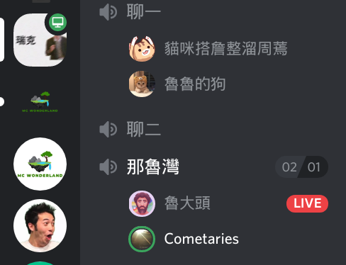
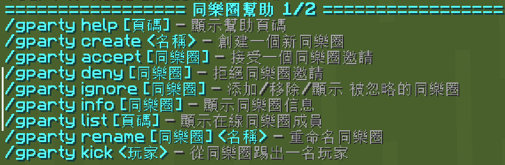
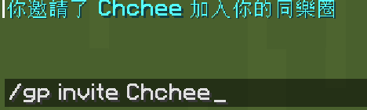
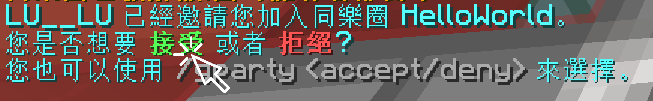
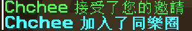
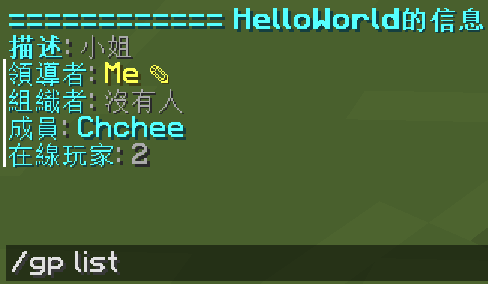
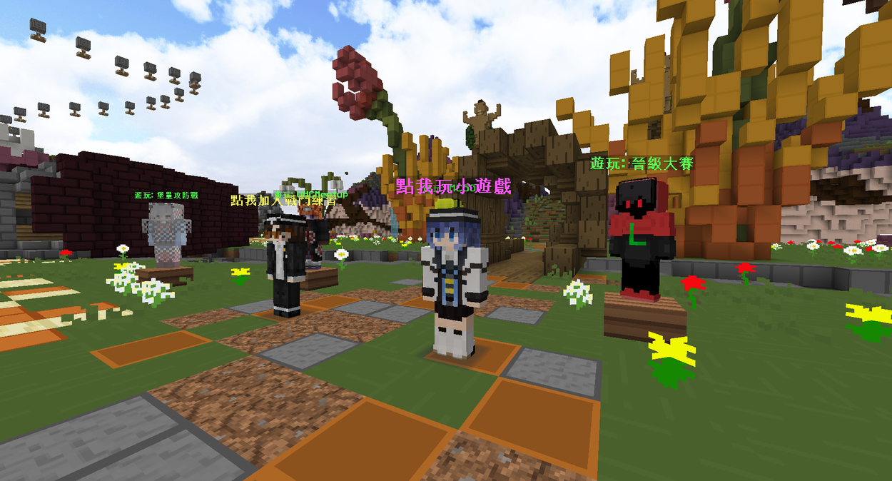
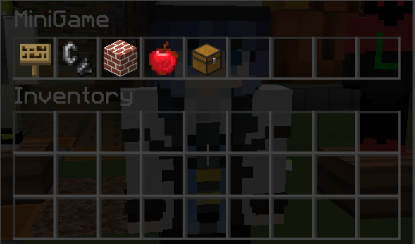
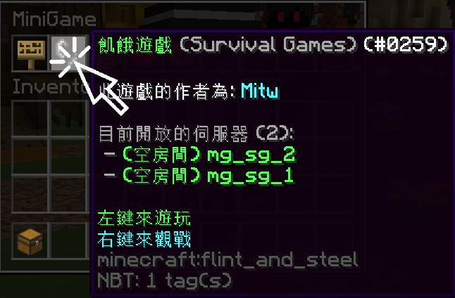
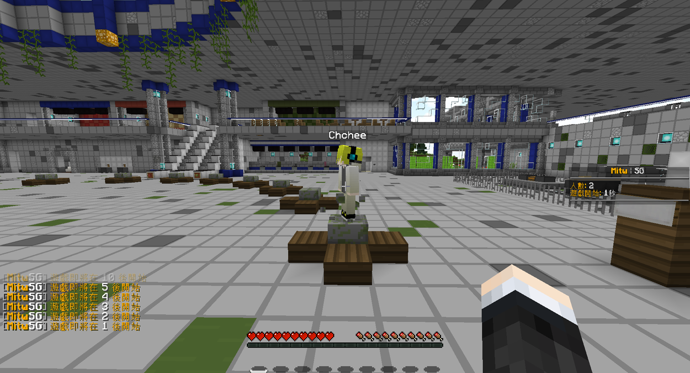

開始使用小遊戲系統！
很高興能看到你來這裡，歡迎使用那魯灣同樂圈系統！
這個系統的使用方式非常簡單，步驟其實就是: 組隊 → 玩遊戲
如何組隊
首先，從社交圈或是 Discord 找幾個朋友登入那魯灣，他們會作為等等跟你一起玩遊戲的重要夥伴！

請先使用/gp(或是 /gparty)指令，您應該會看到下圖很豐富的指令列表，這些不用急著了解，可以等之後有空再看看

使用/gp invite <朋友的 Minecraft ID>來邀請你的朋友加入同樂圈

這個時候，你的朋友應該會看到類似下方的訊息，只要請他點一下接受按鈕，就可以加入你的同樂圈囉


(額外補充) 可以使用/gp list確認朋友是否真的加入了

組隊之後呢？怎麼玩遊戲
其實最困難的是怎麼組隊，一旦隊伍組起來，一切就好處理了！玩遊戲的方法非常簡單，讓我們一起來試試看！
您應該會看到，在那魯灣的大廳擁有許多的 NPC，分別敘述了點擊他們之後會發生什麼事情

這次教學，我們就先點擊點我玩小遊戲的NPC好了！點它之後，應該會看到遊戲出現了下方這種充滿了各式各樣小遊戲的界面，使用/mg指令也可以達到同樣效果喔

你可以選擇自己最喜歡的小遊戲來玩，但這畢竟是教學，我們還是選一個曾經在Minecraft裡面最經典的飢餓遊戲來玩玩看好了！(飢餓遊戲?)


恭喜你！
到目前為止，你已經知道怎麼跟朋友在那魯灣暢玩小遊戲了，盡情享受跟朋友們愉快玩遊戲、聊天打屁的時光吧！
當然，要玩得更開心，你一定要看底下的補充資料，畢竟現在還有很多功能沒介紹。
使用/mg rejoin即可回到小遊戲中
如果你是隊長的話，使用/gp warp指令即可召喚所有人到你所在的伺服器喔
想回到大廳的話，使用/hub指令就可以囉
使用/gpc <訊息>即可傳送只有同樂圈看得到的訊息喔！
使用/gp chat on可以開啟持續聊天模式，所有訊息都會送到同樂圈中
/gp create 創建同樂圈
/gp invite <玩家ID> 邀請玩家進入同樂圈
/gp list <玩家ID> 查看同樂圈資訊
/gp globalparties<玩家ID> 查看目前所有公開同樂圈
/gp ask <同樂圈名稱> 請求加入同樂圈
/gp leave <同樂圈名稱> 離開同樂圈(擁有者離開=解散)